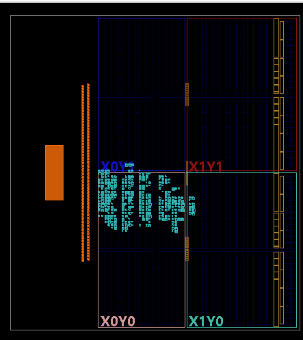
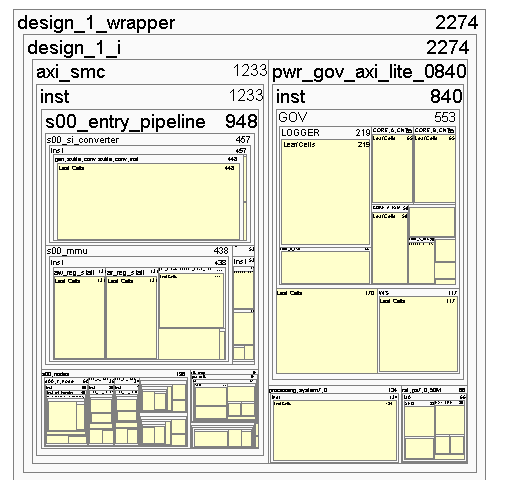
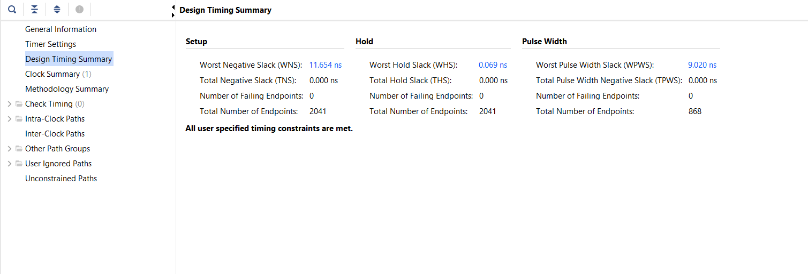
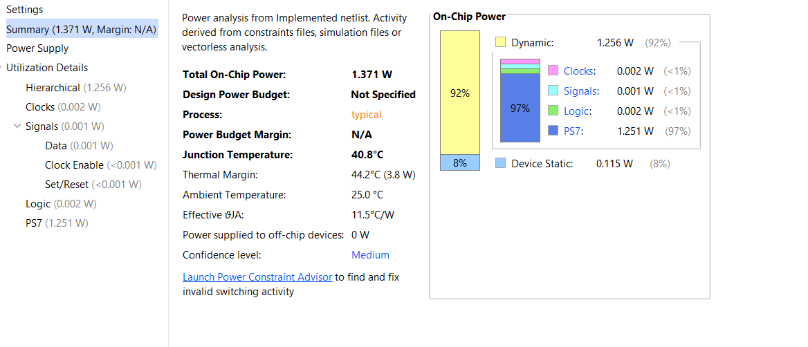
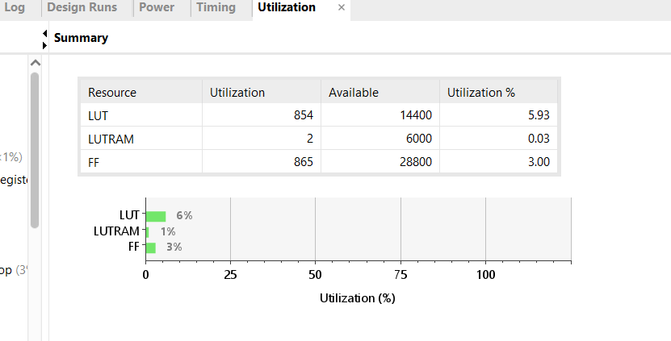
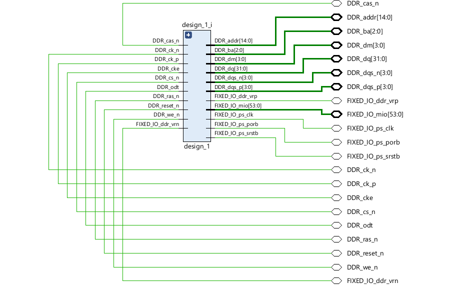

1. Problem Statement & Motivation
THEME 3: POWER MANAGEMENT
Background
Power efficiency is a critical challenge in modern SoCs. Systems dynamically adjust performance based on workload, activity, and stall conditions. This problem focuses on designing a hardware power controller that monitors system behavior and makes control decisions accordingly.
Sensor & Workload Inputs
Physical thermal sensors and hardware workload monitors are simulated using software-writable registers or onboard switches. This includes thermal inputs for the thermal-aware innovation add-on.
Base Implementation & Add-ons
- Requirements: Monitor activity signals, compute utilization over windows, detect idle/stall conditions, support Active & Low-Power states.
- Modules: Activity monitor, Counters, FSM controller, Control signal generator, Register interface.
- Level 1 Innovation: Predictive workload detection, Thermal-aware control, Multi-state modes, Oscillation reduction.
- Level 2 Innovation: System-level workload simulation, Global power budgeting, Performance feedback loop.
"Good morning/afternoon. The core problem is to make power-state decisions dynamically while maintaining performance and safety..."
2. Approach to Solving the Problem
Host Application (GUI)
Python-based, Bidirectional
USB Bridge
Plug-and-play Connectivity
Dual-Core Firmware
Core 0: Control | Core 1: Comm
Hardware Layer
FPGA Fabric Telemetry
Hardware Layer
The FPGA fabric is continuously sampling power telemetry — voltage, current, and derived metrics — at high speed. This raw data feeds into a custom power governor module, which actively computes a policy decision in real time.
Firmware Split
Our first key differentiator. Core 0 owns the real-time control loop and applies the governor policy. Core 1 handles communication. This separation ensures the control loop is never blocked by I/O.
USB Bridge
Data leaves the SoC through USB, giving us plug-and-play host connectivity with no custom drivers. The telemetry stream is structured so the host application can parse it instantly.
Host GUI
A Python-based application receives, parses, and visualizes the telemetry. It closes the loop: user adjustments travel back down and are applied. A true bidirectional control feedback loop.
3. Design Architecture

[Far Left] Safety Policies
"Simulated thermal data feeds into our Register Interface, which establishes the safety policies and thresholds for the entire chip."
[Center] Local FSM
"Inside each core, a Window Counter collects raw telemetry. This data flows into the local Power FSM, predicting workloads and requesting an ideal power state."
[Right] Global Arbiter
"Both cores send requests to the Thermal-Aware Arbiter. If the global power budget is tight, the Arbiter steps in to restrict and prioritize them."
[Bottom] Feedback Loop
"If heavy throttling occurs, our Performance Feedback Loop dynamically expands the budget. The Power Logger records every action for full autonomy."
4. Self-Checking Testbench Outputs
For verification, we used self-checking testbenches with rigorous pass/fail markers. We validated: Counter window behavior, FSM transition policies, Thermal register interfaces, and Arbiter budget priorities.
> Starting FSM Policy Simulation...
> Requesting state: ACTIVE (Core A)
> Thermal threshold: OK
> State transition -> GRANTED
> TB_PASS Policy FSM behaved as expected.
...
> Requesting state: BOOST (Core B)
> Global Budget: RESTRICTED
> Arbiter overriding state -> ACTIVE
> TB_PASS Arbitration override successful.
> Simulation Complete. 0 Errors.
EDA Playground Verification
Automated confidence before hardware deployment achieved through detailed behavioral simulations.
5. Implementation & Placement Results
Synthesis, Implementation, and Bitstream Generation successfully completed.


"This view confirms placement completion and gives us confidence in physical feasibility and timing closure context."
6. Reports: Timing, Power & Hardware
Timing

Target Clock MET
Power Usage

Aligns with expected profile.
Hardware
Verified on target FPGA.
7. Resource Utilization
LUTs
Within Budget
Flip-Flops (FFs)
Within Budget
DSPs
Optimal
BRAM
Efficient


8. Live Demonstration: Vitis & GUI
Vitis Bare-Metal Bridge
- AXI register read/write for host mode, requests, and budget constraints.
- Periodic telemetry frame generation over UART.
- Command handling to change runtime behavior instantly.
Python GUI Overlay
Send control commands, display live telemetry, decode status, and trigger simulations to see immediate pass/fail states in real-time.
Loading Demo Video...
9. Challenges Faced During Development
01 // Integration Consistency
Maintaining consistency between the RTL hierarchy and the Vivado block design during iterative updates required strict version control and boundary definitions.
02 // Stale Generated Artifacts
Encountered build and run issues stemming from stale generated artifacts within the Vivado environment, necessitating careful script-based cleanup workflows.
03 // Host Override Feedback
Keeping the feedback policy behavior consistent and predictable when transitioning in and out of manual Host Override modes was logically complex.
04 // Verification Coverage
Ensuring our testbenches thoroughly covered both isolated module-level behavior and the deeply integrated, timing-sensitive system behavior.
10. Conclusion & Unique Contributions
Our Unique Contributions
- 1.Closed-loop feedback-driven budget policy embedded directly in hardware.
- 2.Curated, highly-automated self-checking verification benches.
- 3.Robust end-to-end software bridge bridging Vitis to AXI registers.
- 4.GUI-assisted telemetry/control workflow for instantaneous live validation.
- 5.Full pipeline proof: Simulation → Synthesis → Implementation → Demo.
Mission Accomplished
"We achieved a complete FPGA power-governor system with verified RTL, successful synthesis/implementation/bitstream, software control via Vitis, and live GUI-based monitoring. The design is ready for final evaluation."
Thank You